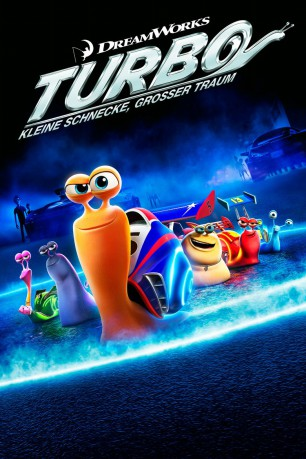

Alternativ: Turbo
 
 IMDB-Wertung: 6.4 / 10
IMDB-Wertung: 6.4 / 10  Metascore:
Metascore: 
Die kleine Weinbergschnecke Turbo hat einen ungewöhnlichen Traum. Er möchte die berühmteste und schnellste Rennschnecke der Welt werden. Dabei eifert er seinem Vorbild, dem fünfmaligen Wettbewerbsgewinner Guy Gange hinterher. Doch durch seine Leidenschaft zum Nervenkitzel ist Turbo zum Außenseiter geworden. Die anderen Schnecken halten nicht viel von Schnelligkeit und möchten lieber ein gemächliches Leben führen. Besonders seinem Bruder Chet ist Turbos Wunsch ausgesprochen peinlich, doch der setzt alles daran, seinen Traum zu verwirklichen. Tatsächlich kommt es eines Tages zu einem mysteriösen Unfall, der Turbo unglaubliche Schnelligkeit verleiht. Sein Traum, bei dem großen Indianapolis 500-Rennen gegen seine Idole anzutreten, könnte somit endlich in Erfüllung gehen, doch bis dahin ist es noch ein weiter Weg.
Jahr: 2013
Dauer: 96 Minuten
FSK: 0
Land: USA Studio: 20th Century FoxTonspuren:
Untertitel:
Auflösung: 720p (1280x544) Größe: 3215 MB
Genre: Animation/Trick, Abenteuer, Komödie, Familie, Sci-Fi, Sport
Regisseur: David Soren
Drehbuch: Darren Lemke, Robert Siegel, David Soren, David Soren
Soundtrack: Henry Jackman
Darsteller:
 Ryan Reynolds als Turbo
Ryan Reynolds als Turbo Paul Giamatti als Chet
Paul Giamatti als Chet Michael Peña als Tito
Michael Peña als Tito Samuel L. Jackson als Whiplash
Samuel L. Jackson als Whiplash Luis Guzmán als Angelo
Luis Guzmán als Angelo Snoop Dogg als Smoove Move
Snoop Dogg als Smoove Move Maya Rudolph als Burn
Maya Rudolph als Burn Michelle Rodriguez als Paz
Michelle Rodriguez als Paz Mike Bell als White Shadow
Mike Bell als White Shadow Paul Dooley als The Foreman
Paul Dooley als The Foreman Chris Miller als Tour Bus Driver
Chris Miller als Tour Bus Driver Latifa Ouaou als Worker Snail #3
Latifa Ouaou als Worker Snail #3 Chris Parnell als Announcer #2
Chris Parnell als Announcer #2 Kurtwood Smith als Indy CEO
Kurtwood Smith als Indy CEO James Ryan als Phil / Plant Worker / Takao Noguchi
James Ryan als Phil / Plant Worker / Takao Noguchi David Soren als Worker Snail #1 / Can't Tuck Snail / Gagne's Crew Chief / Indy Network Executive / Newspaper Boy / Autotune Kid
David Soren als Worker Snail #1 / Can't Tuck Snail / Gagne's Crew Chief / Indy Network Executive / Newspaper Boy / Autotune KidDatei: X:\Kinder Filme (N-Z)\Turbo - Kleine Schnecke, großer Traum (2013, FSKo.Al., 1280x544) 3D.mkv seit 12.03.2015
Festplatte: Kinder-Filme+Trick
 Es gibt insgesamt 87 Filme in der Gruppe 'Kinder Filme (N-Z)'
Es gibt insgesamt 87 Filme in der Gruppe 'Kinder Filme (N-Z)'